저어새Platalea minor
저어새Platalea minor백로류 5
오리·물새 16
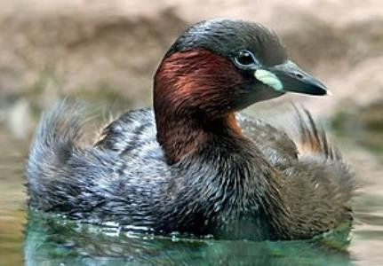
논병아리Tachybaptus ruficollis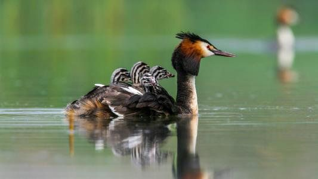
뿔논병아리Podiceps cristatus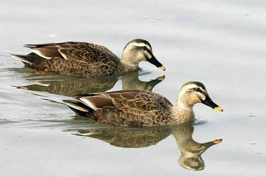
흰뺨검둥오리Anas zonorhyncha 청둥오리Anas platyrhynchos
청둥오리Anas platyrhynchos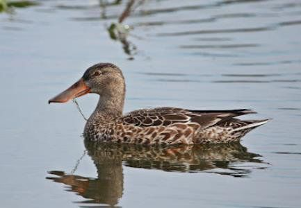
넓적부리Spatula clypeata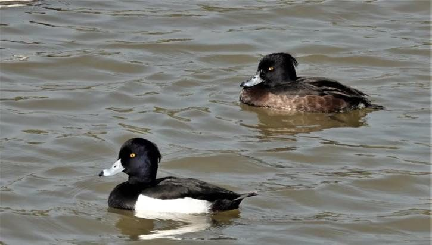
댕기흰죽지Aythya fuligula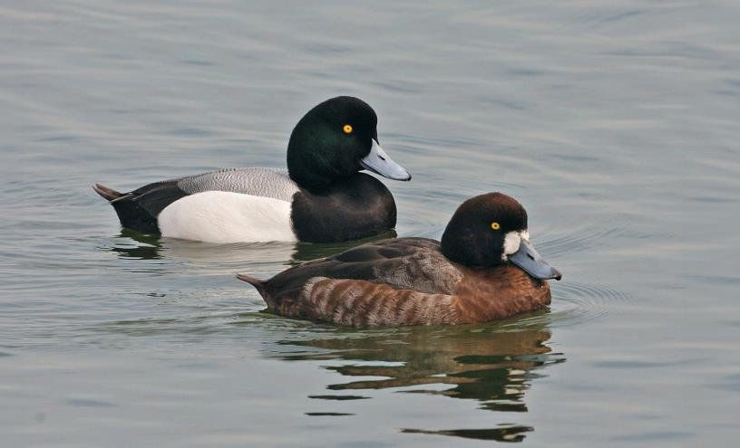
검은머리흰죽지Aythya marila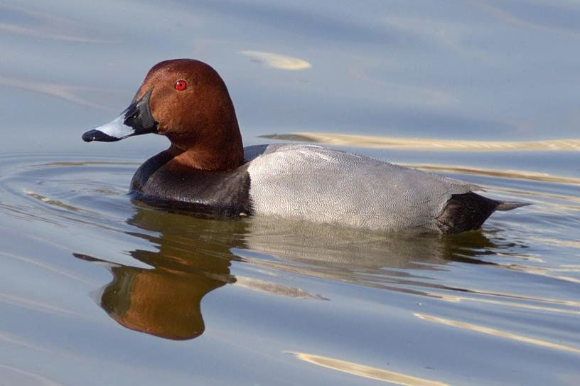
흰죽지Aythya ferina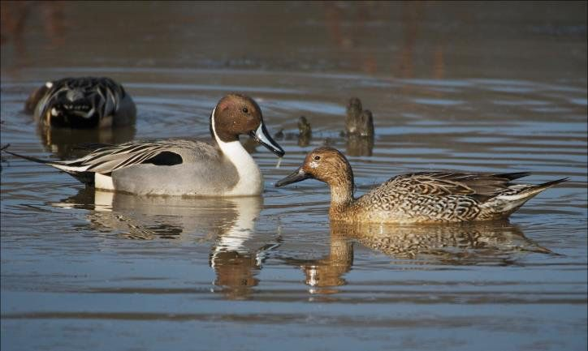
고방오리Anas acuta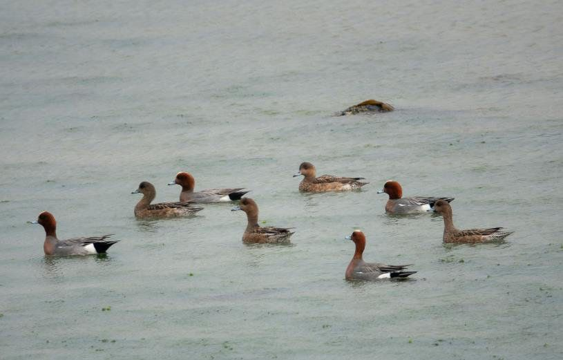
홍머리오리Mareca penelope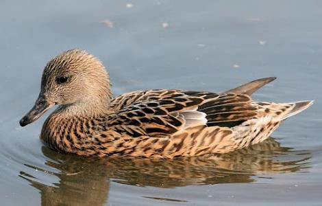
청머리오리Mareca falcata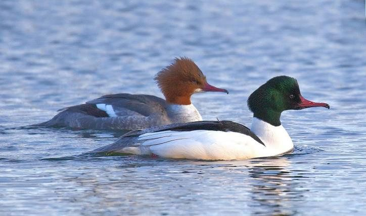
비오리Mergus merganser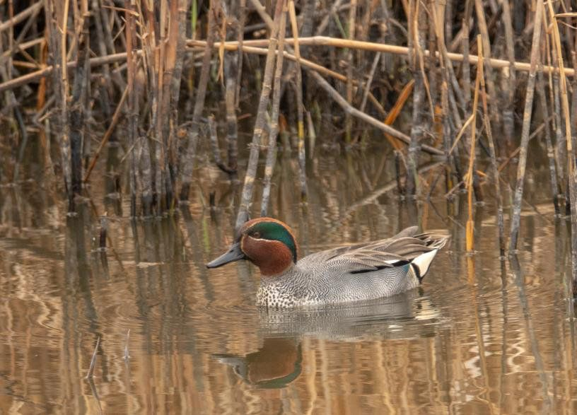
쇠오리Anas crecca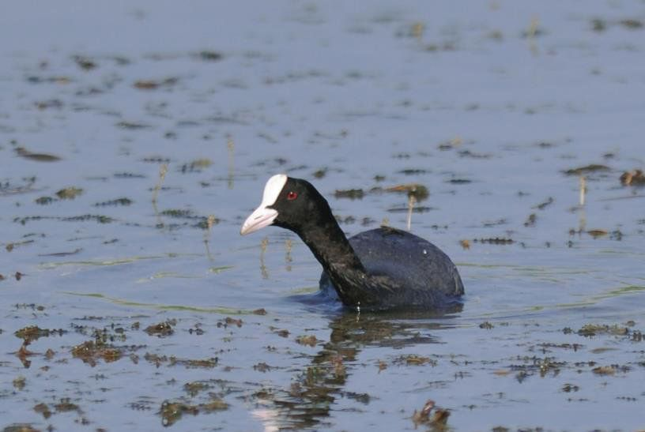
물닭Fulica atra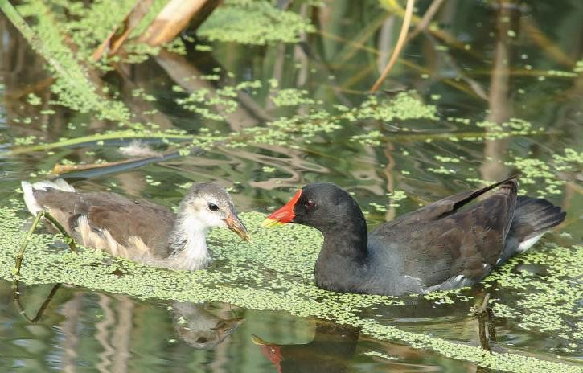
쇠물닭Gallinula chloropus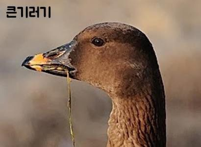
큰기러기Anser fabalis갈매기류 5
도요·물떼새 8
가마우지류 3
산새·들새 22
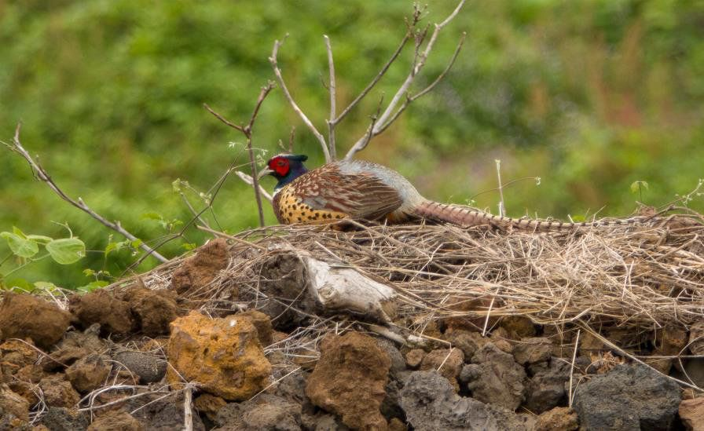
꿩Phasianus colchicus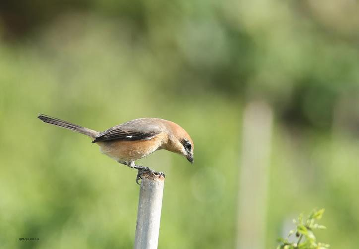
때까치Lanius bucephalus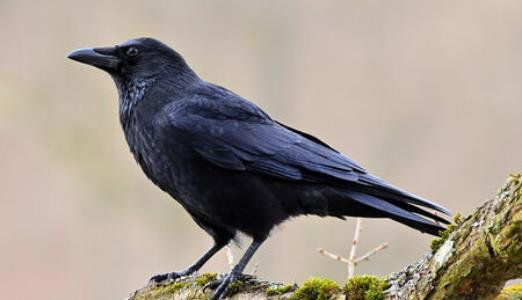
큰부리까마귀Corvus macrorhynchos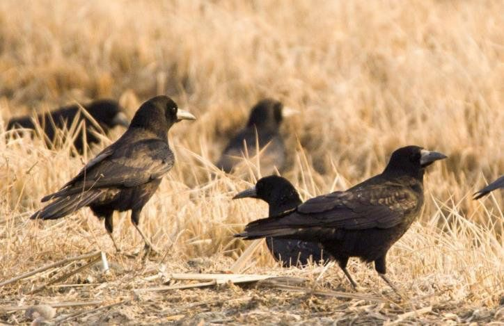
떼까마귀Corvus frugilegus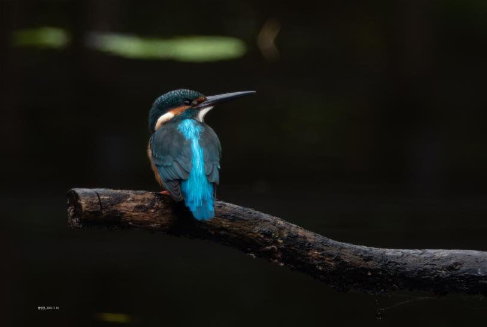
물총새Alcedo atthis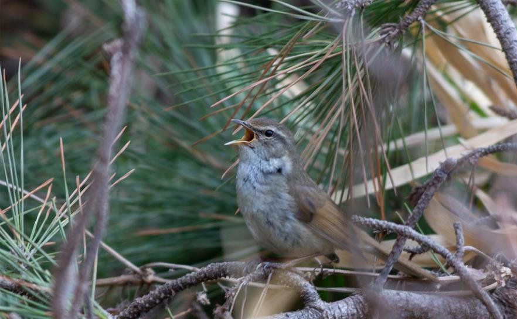
섬휘파람새Horornis diphone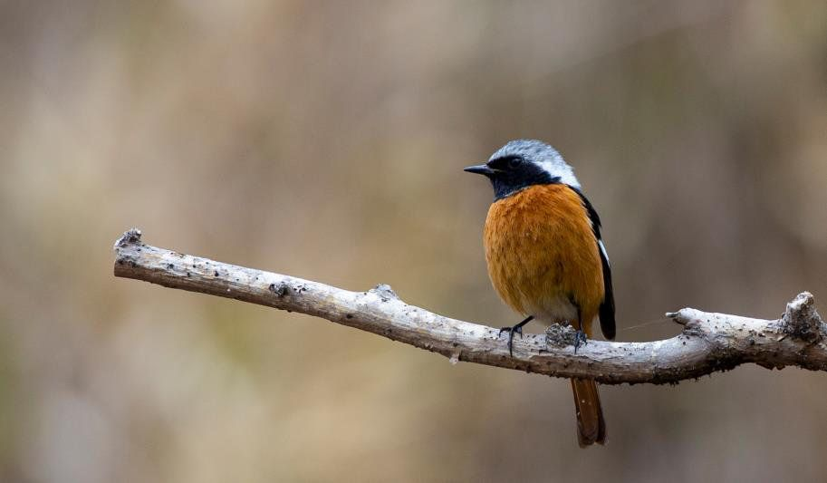
딱새Phoenicurus auroreus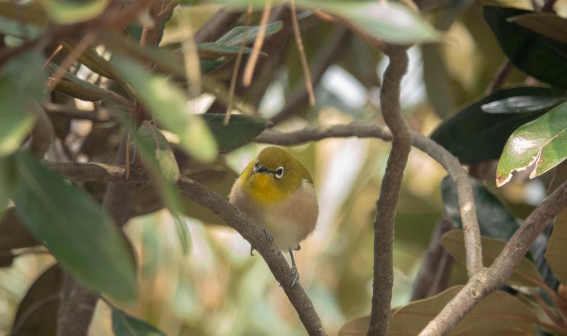
동박새Zosterops japonicus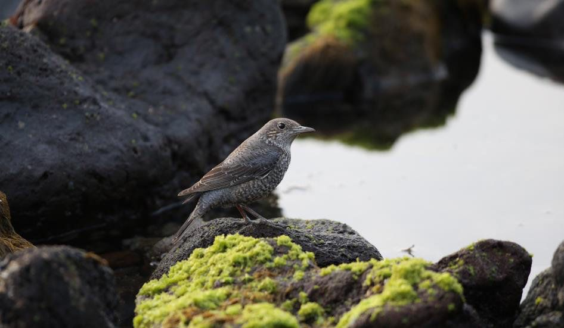
바다직박구리Monticola solitarius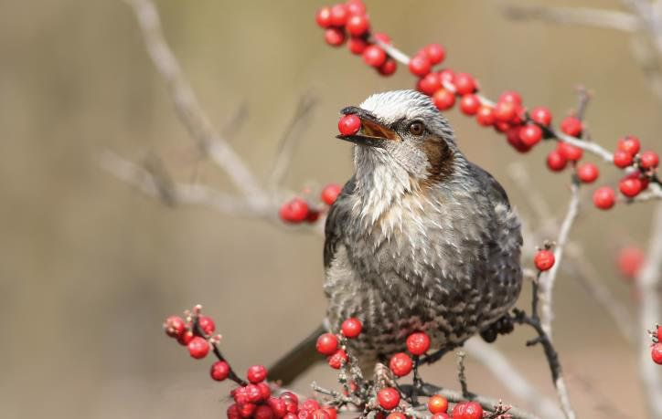
직박구리Hypsipetes amaurotis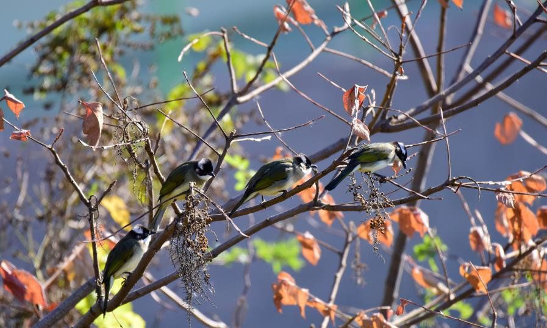
검은이마직박구리Pycnonotus sinensis방울새Chloris sinica 박새Parus major참새Passer montanus노랑턱멧새Emberiza elegans흰배지빠귀Turdus pallidus찌르레기Spodiopsar cineraceus멧비둘기Streptopelia orientalis집비둘기Columba livia var. domestica제비Hirundo rustica알락할미새Motacilla alba노랑할미새Motacilla cinerea
박새Parus major참새Passer montanus노랑턱멧새Emberiza elegans흰배지빠귀Turdus pallidus찌르레기Spodiopsar cineraceus멧비둘기Streptopelia orientalis집비둘기Columba livia var. domestica제비Hirundo rustica알락할미새Motacilla alba노랑할미새Motacilla cinerea사진과 설명 출처: 2026 오조리 탐조대회 미니도감(강사 제공). 학명·크기·보호 등급은 공식 자료와 대조해 고쳤습니다.